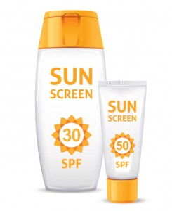

Hi, I'm Amy Qian, a 4th year Computer Science major at Northeastern University.
I'm mainly a full stack developer, but am also interested in machine learning and computer vision.
Facebook
LinkedIn
GitHub
Food Tracker

Sunscreen Ingredient Crawler